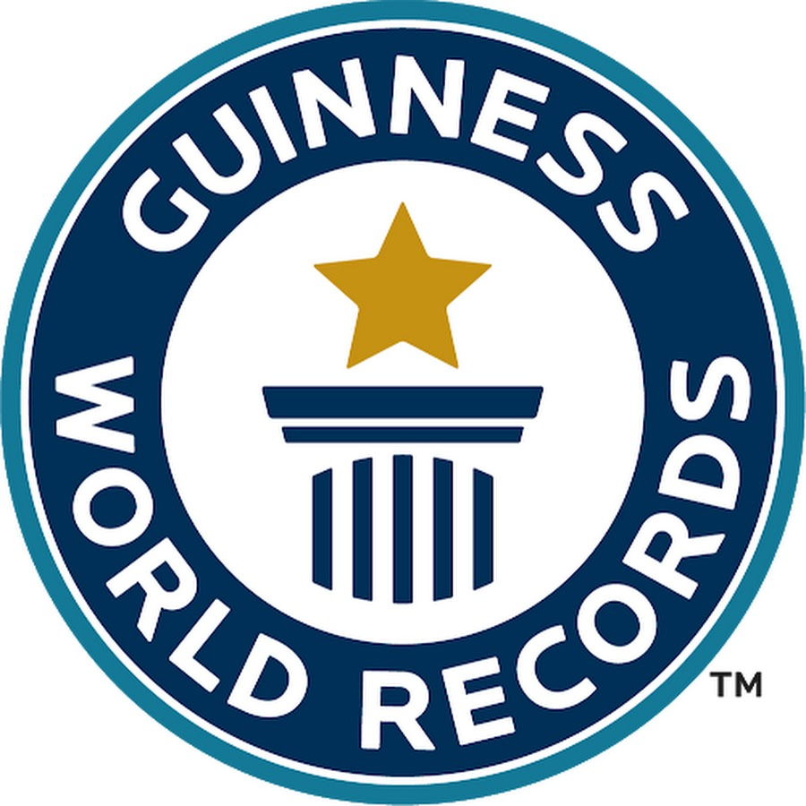

Largest display of cheese varieties: 730, achieved by Philippe Marchand (France) in Nancy, France, on 23 September 2016.
Largest cheese platter: 2,012.85 kg (4,437 lb 9.92 oz), and was prepared by Dairy Farmers of Wisconsin (USA) in Madison, Wisconsin, USA, on 1 August 2018.
Morgan Niquet, François Robin and Julien Serri (all France) prepared the record-breaking pizza at the SIRHA exhibition on 25 September 2021.
